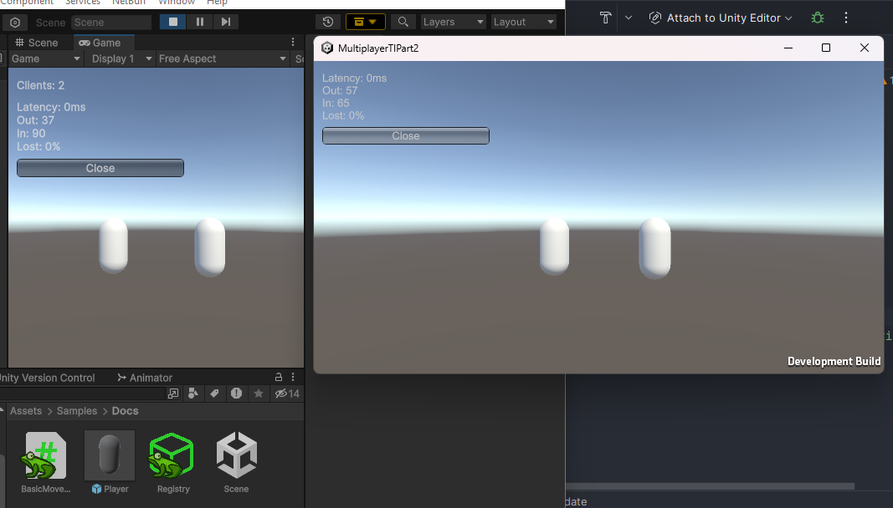

Getting Started
In the following sections you can find help on how to setup a NetLib project. We recommend using unity 2023.2 or a newer version.
Package Installation
- Go to Unity Package Manager Window -> Package Manager
- Click the "+" button in the upper left corner of the window.
- Select the "Add package from git URL..." option.
- Paste the link below and click the "Add" button.
- Done! Now the package is already installed. You can download samples as well if you want
https://github.com/buff-buff-studio/NetBuff-Lib.git#package
Networking Setup
Create a empty scene to begin. We recommend using the Basic (Built-In) template:
Now, create a new GameObject and add the following components:
- Network Manager
- Network Manager GUI
- UDP Network Transport
Network Manager
The NetworkManager is the main network component. It manages conections, objects, packets and everything else network-related, being an unique component in the network structure.
Network Manager GUI
The NetworkManagerGUI is a temporary component used for testing purposes. It creates a menu where you can manage the network connection, find all the servers on the network and to see network stats
UDP Network Transport
The UDPNetworkTransport is the basic transport, used to establish server-client connections over internet
Set Network Transport
Now we need to set the network transport at the network manager. Just drag and drop the transport into the manager transport field:
Creating the player prefab
If you start the game and try to host a server you will see an error in console. By default we need to provide a player prefab to the NetworkManager to spawn the player object. Following the steps bellow we can create a simple player prefab:
- Create a new capsule
- Add a NetworkTransform component
- Drop it as a prefab at the Project View
- Delete it from the scene
Creating the prefab registry
Now you are one step away from the success! Even if you set the player prefab, all the network ends must know what the prefab the server is trying to spawn, so we need to setup our NetworkPrefabRegistry first.
- Create a new NetworkPrefabRegistry in the left click menu of the Project Folder
- Add the prefab to the registry list (Create at the + button to add a new slot to the registry)
- Click on N button to generate a new id
- Set it in the registry field of the NetworkManager
- Set the player prefab in the player prefab field of the NetworkManager
Done!
Now we are done! You can hit the play button and then click in Start Host to start the host (Client + Server)
Simple Movement Test
Creating a simple script we can test our server. You can use the code bellow or create your own logic!
using NetBuff.Components;
using UnityEngine;
namespace Samples.Docs
{
public class BasicMovement : NetworkBehaviour
{
private void Update()
{
if (!HasAuthority)
return;
var move = new Vector3(Input.GetAxis("Horizontal"), 0, Input.GetAxis("Vertical"));
transform.position += move * Time.deltaTime * 3;
}
}
}
Add it to player and run the game again! You can even build and join the server as client because your multiplayer game is already working!
